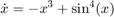
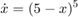
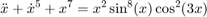
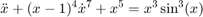
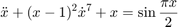
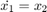
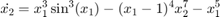
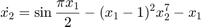

MAE 5803 - Homework #2 Problem #2
Tim Coon: 9, February 2017
Contents
clear; close all; clc;
Set default figure properties
set(0,'defaultlinelinewidth',2.5) set(0,'defaultaxeslinewidth',2.5) set(0,'defaultpatchlinewidth',2.5) set(0,'defaulttextfontsize',14) set(0,'defaultaxesfontsize',14) set(0,'defaultTextInterpreter','latex')
Equilibrium Points and Stability
Fo the following systems, find the equilibrium points and determine their stability. Indicate if the stability is asymptotic and if it is global.





Eqn #1:
First-order state equation
This system has an equilibrium point at  . It is an asymptotically stable node.
. It is an asymptotically stable node.  is positive whenever
is positive whenever  is negative and vice versa as seen in the phase plane plot. To be sure it does not oscillate unbounded, look at the candidate Lyapunov function as it satisfies all conditions for global asymptotic stability.
is negative and vice versa as seen in the phase plane plot. To be sure it does not oscillate unbounded, look at the candidate Lyapunov function as it satisfies all conditions for global asymptotic stability.


The Lyapunov function is:


figure() ezplot('-x^3 + sin(x)^4') xlabel('x'); ylabel('dx'); figure() ezplot('2*x*(-x^3+sin(x)^4)') xlabel('x'); ylabel('dV/dt');


Eqn #2:
First-order state equation
This system has an equilibrium point at  . It is an unstable node as evidenced by using the candidate Lyapunov function to show violation of Theorem 3.2. Clearly,
. It is an unstable node as evidenced by using the candidate Lyapunov function to show violation of Theorem 3.2. Clearly,  is not negative semidefinite.
is not negative semidefinite.
The Lyapunov function is:

figure() ezplot('(5-x)^5') xlabel('x'); ylabel('dx/dt'); figure() ezplot('2*x*(5-x)^5') axis([-10 10 -1000 1000]) xlabel('x'); ylabel('dV/dt');


Eqn #3:
First-order state equation


This system has an equilibrium point at the origin. It is an unstable node. The phase portrait shows the origin is an equilibrium point. The Lyapunov function is positive definite in a ball about the origin. The time derivative of the lyapunov function in a ball about the origin is not negative semidefinite as revealed by the plots below showing the  zero-plane intersection and a 3D surface plot revealing the positive values arbitrarily close to the origin.
zero-plane intersection and a 3D surface plot revealing the positive values arbitrarily close to the origin.
The Lyapunov function is:


HW1P2_plotPhasePortrait(3,[0 100],[-1 1],[-1 1],'System \#3') figure set(0,'DefaultTextInterpreter','tex') ezplot('2*x1*x2+2*x2*(x1^2*sin(x1)^8*cos(3*x1)^2-x1^7-x2^5)'); figure ezsurf('2*x1*x2+2*x2*(x1^2*sin(x1)^8*cos(3*x1)^2-x1^7-x2^5)') hold on ezsurf('0') hold off xlabel('x1'); ylabel('x2'); title('$\dot{V}(x)$','Interpreter','latex') zlim([-1 1])


Eqn #4:
First-order state equation

The phase portrait suggests one equilibrium point is at least locally stable as all trajectories appear to converge on the origin. The Lyapunov function is positive definite in a ball about the origin. The time derivative of the lyapunov function in a ball about the origin is not negative semidefinite. The equilibrium point is unstable.
The Lyapunov function is:

HW1P2_plotPhasePortrait(4,[0 20],[-2 2],[-2 2],'System \#4') figure set(0,'DefaultTextInterpreter','tex') ezplot('x1*x2 + x2^2 + (x1+x2)*(x1^3*sin(x1)^3-(x1-1)^4*x2^7-x1^5)') figure ezsurf('x1*x2 + x2^2 + (x1+x2)*(x1^3*sin(x1)^3-(x1-1)^4*x2^7-x1^5)') hold on ezsurf('0') hold off xlabel('x1'); ylabel('x2'); title('$\dot{V}(x)$','Interpreter','latex') zlim([-1 1])


Eqn #5:
First-order state equation



The phase portrait suggests two equilibrium points at least locally stable as all trajectories appear to converge. The Lyapunov functions positive definite in region  . However, is not negative semidefinite
. However, is not negative semidefinite  in . The equilibrium point is, therefore, unstable.
in . The equilibrium point is, therefore, unstable.
HW1P2_plotPhasePortrait(5,[0 5],[-2 2],[-2 2],'System \#5') figure set(0,'DefaultTextInterpreter','tex') ezplot('x2*(x1 + 1) - x2*(x1 - sin((pi*x1)/2) + x2^7*(x1 - 1)^2)') figure ezsurf('x2*(x1 + 1) - x2*(x1 - sin((pi*x1)/2) + x2^7*(x1 - 1)^2)') hold on ezsurf('0') hold off xlabel('x1'); ylabel('x2'); title('$\dot{V}(x)$','Interpreter','latex') zlim([-1 1])